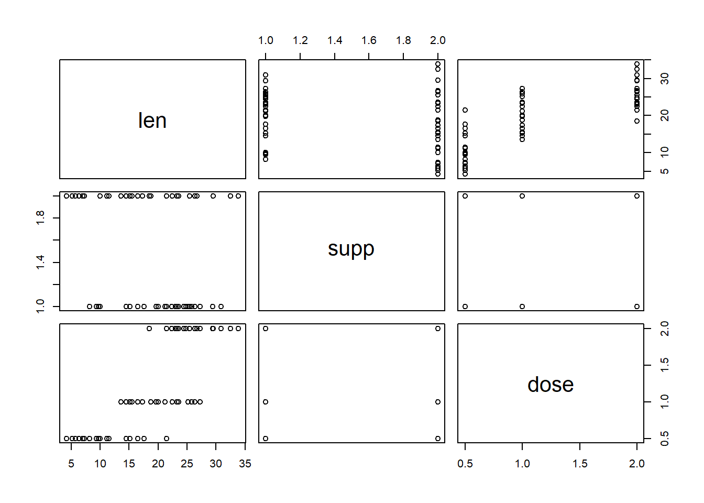
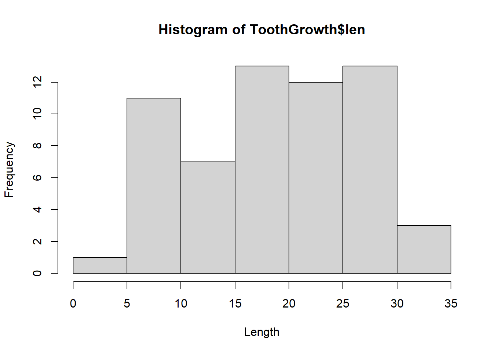
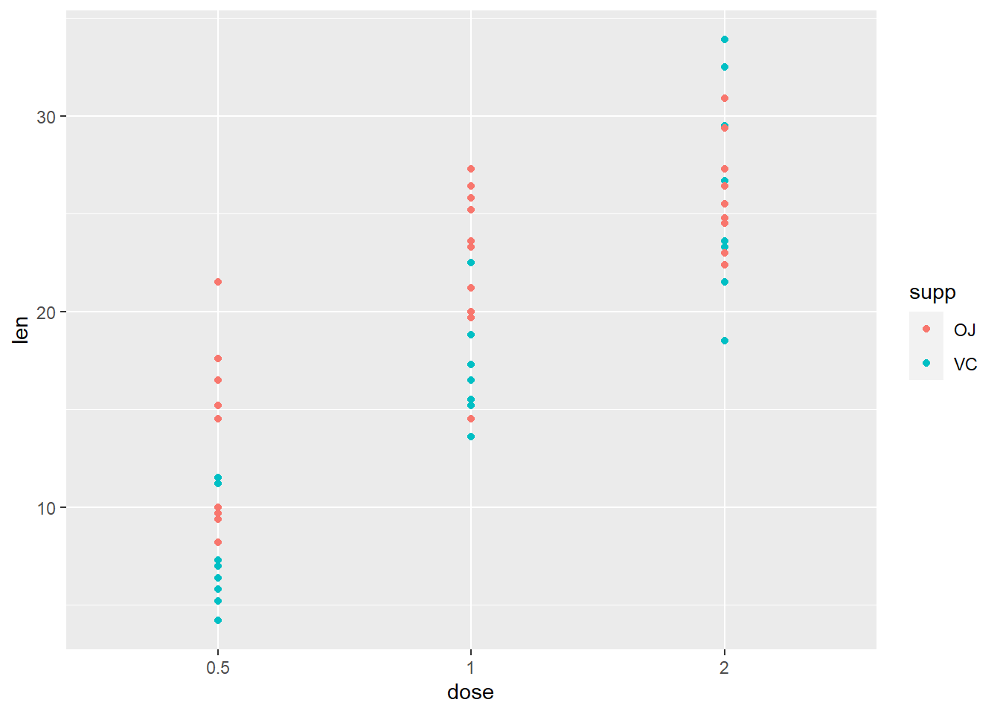
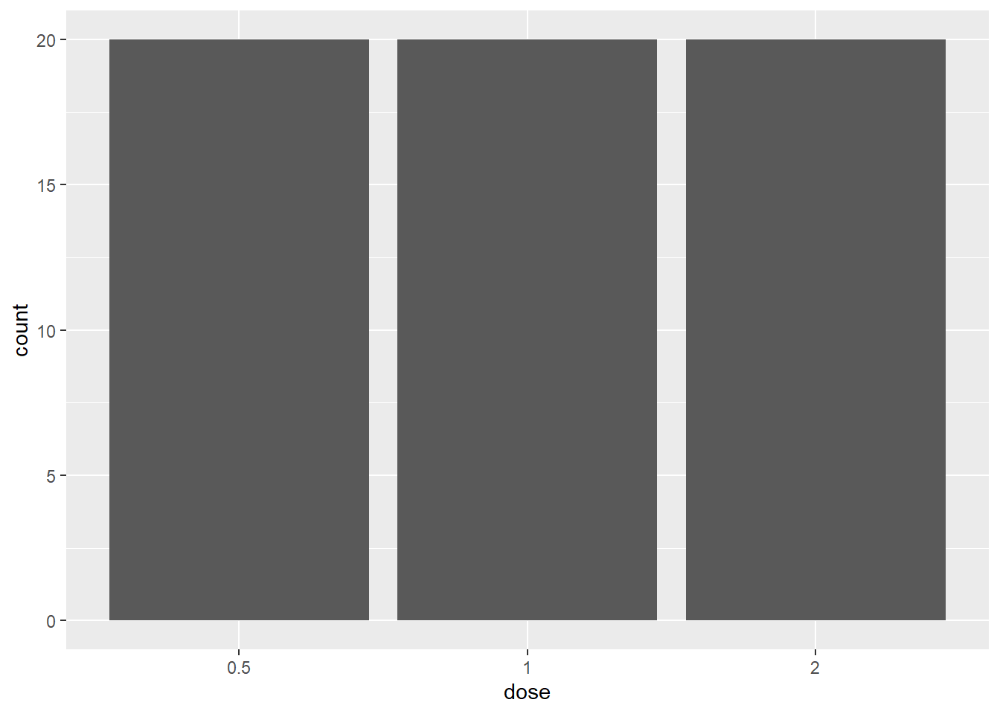
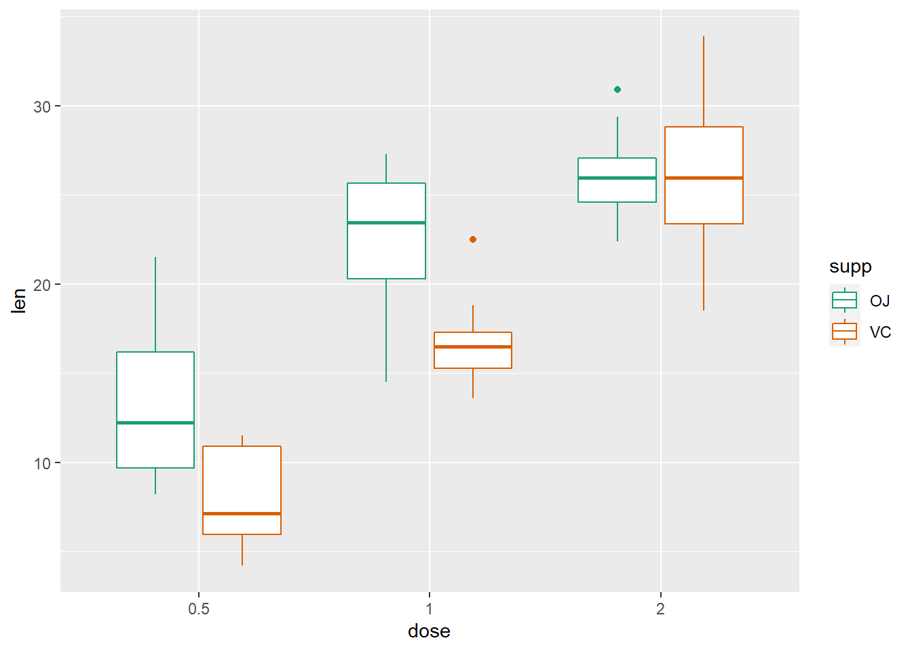
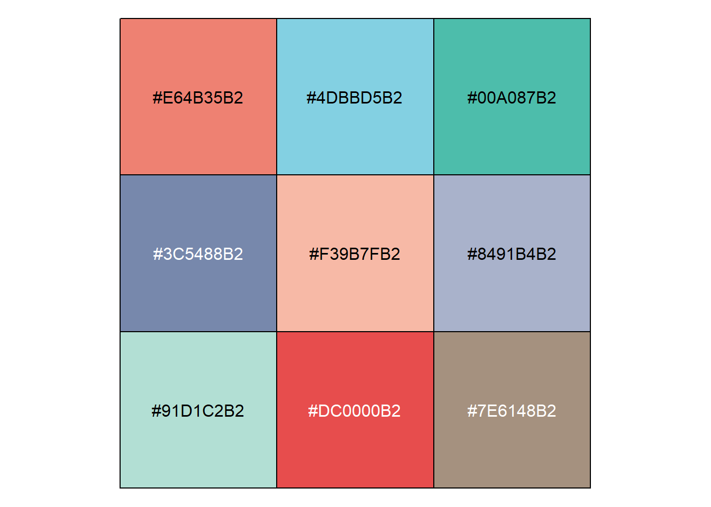

6 Graphing with ggplot2
Objective: * To learn how to use ggplot2 package for custom visualizations
We will cover:
* Initializing a plot using ggplot() function call
* geom_ layers and how to save ggplots (gg_save())
* Factors
This tutorial is based upon a lesson by UofT coders: https://uoftcoders.github.io/studyGroup/lessons/r/ggplot2/lesson/. Check out their sessions!
We’ll use the ToothGrowth data set (comes with R)
A full tutorial using this dataset to make ggplot2 graphs can be found here: http://www.sthda.com/english/articles/32-r-graphics-essentials/125-ggplot-cheat-sheet-for-great-customization
# Make the data appear in environment # you can still use it without doing this step
data("ToothGrowth")
# Look at the first 6 rows
head(ToothGrowth)## len supp dose
## 1 4.2 VC 0.5
## 2 11.5 VC 0.5
## 3 7.3 VC 0.5
## 4 5.8 VC 0.5
## 5 6.4 VC 0.5
## 6 10.0 VC 0.5# Look at the structure of a data frame (column names and data types)
str(ToothGrowth) ## 'data.frame': 60 obs. of 3 variables:
## $ len : num 4.2 11.5 7.3 5.8 6.4 10 11.2 11.2 5.2 7 ...
## $ supp: Factor w/ 2 levels "OJ","VC": 2 2 2 2 2 2 2 2 2 2 ...
## $ dose: num 0.5 0.5 0.5 0.5 0.5 0.5 0.5 0.5 0.5 0.5 ...# # Learn more about the data
# ? ToothGrowth Use base plotting functions to look at data
plot(ToothGrowth)
# Make a scatter plot of 2 variables
plot(x = ToothGrowth$dose, y = ToothGrowth$len, type = "p", xlab = "Length", ylab = "Dose", main = "Tooth Length vs Dose")
# make a histogram of length
hist(ToothGrowth$len, xlab = "Length") But ggplot2 plots are prettier:
6.1 What is ggplot2?
- the gg in ggplot2 stands for the Grammar of Graphics
- The idea is that the composition of graphical components in statistical graphics has grammar
- By controlling that grammar, you can create a set of graphics tailored to your particular needs
- Starting with the ggplot() function call, each graphical component is added (using +) to the plot as a layer
Components of a ggplot: 1. Aesthetics (within brackets of mapping = aes()), where mapping is an argument in ggplot() or geom_ (), examples: x and y position - x, y size of elements - size shape of elements - shape colour of elements - color
2, Elements in a plot are geometric shapes, examples:
points - geom_point()
lines - geom_line()
regression - geom_smooth()
boxes - geom_boxplot()
bars - geom_bar()
text - geom_text()
- Some of these geometries have their own particular aesthetics. For instance:
points have:
point shape
point size
lines have:
line type
line len
bars have:
y minimum
y maximum
fill color
outline color
text
install ggplot2
# Install package
# install.packages("ggplot2")
# Load package into environment
library(ggplot2)Our first graph?
# Initialize ggplot object using ggplot()
# If mapping = aes() is not defined, you must supply it in each layer added to the plot
# Here, x is the "dose" column and y is the "len" column in ToothGrowth
ggplot(ToothGrowth, mapping = aes(x=dose, y=len))
We’ve made the structure of our graph, but we need to add a layer to it in order to define what type of graph it is. Let’s make a scatterplot:
# Add geom_point() to your ggplot() object to visualize points
ggplot(ToothGrowth, aes(x=dose, y=len)) +
geom_point()
6.2 Factors
You can see the dose variable is taken as a continuous variable. This is where factors are important.
- Factor variables represent discrete categories or groups in your data. The function factor() can be used to create a factor variable.
- R orders factor levels alphabetically, so if you want to redefine the order, do it in the factor() function call.
- is.factor() returns TRUE if an object is a factor.
# The structure function tells you if a column in a data frame is a factor
str(ToothGrowth)## 'data.frame': 60 obs. of 3 variables:
## $ len : num 4.2 11.5 7.3 5.8 6.4 10 11.2 11.2 5.2 7 ...
## $ supp: Factor w/ 2 levels "OJ","VC": 2 2 2 2 2 2 2 2 2 2 ...
## $ dose: num 0.5 0.5 0.5 0.5 0.5 0.5 0.5 0.5 0.5 0.5 ...# Convert "dose" from a numeric vector to a factor (continuous to discrete)
is.numeric(ToothGrowth$dose) # Is it a numeric vector? Yes## [1] TRUEToothGrowth$dose <- factor(ToothGrowth$dose) # Reassign as factor to dataframe
levels(ToothGrowth$dose) # Check the levels## [1] "0.5" "1" "2"# Check whether "supp" column is a factor
ToothGrowth$supp # we know it's a factor because it specifies lvls## [1] VC VC VC VC VC VC VC VC VC VC VC VC VC VC VC VC VC VC VC VC VC VC VC VC VC
## [26] VC VC VC VC VC OJ OJ OJ OJ OJ OJ OJ OJ OJ OJ OJ OJ OJ OJ OJ OJ OJ OJ OJ OJ
## [51] OJ OJ OJ OJ OJ OJ OJ OJ OJ OJ
## Levels: OJ VCis.character(ToothGrowth$supp) # Is it a character vector?## [1] FALSEis.factor(ToothGrowth$supp) # Is it a factor?## [1] TRUE# Reorder the supp variable so "VC" has greater precedence than "OJ"
levels(ToothGrowth$supp) ## [1] "OJ" "VC"factor(ToothGrowth$supp, levels = c("VC", "OJ")) # Note: there is no assignment in this line so we did not modify the data frame## [1] VC VC VC VC VC VC VC VC VC VC VC VC VC VC VC VC VC VC VC VC VC VC VC VC VC
## [26] VC VC VC VC VC OJ OJ OJ OJ OJ OJ OJ OJ OJ OJ OJ OJ OJ OJ OJ OJ OJ OJ OJ OJ
## [51] OJ OJ OJ OJ OJ OJ OJ OJ OJ OJ
## Levels: VC OJYou can also save the structure of the graph to a variable and then add layers and other attributes to it. Let’s do that:
# Save ggplot object
g <- ggplot(ToothGrowth, aes(x=dose, y=len))
# Add a layer
g + geom_point()
We can add other layers of graphs to our first graph. Let’s add a trend line to our scatterplot:
g + geom_point() + geom_smooth() ## `geom_smooth()` using method = 'loess' and formula 'y ~ x'
## `geom_smooth()` using method = 'gam'We can also facet our graphs, which means dividing a plot into subplots based on the values of one or more discrete variables.
g + geom_point() + geom_smooth() + facet_grid(supp~.)## `geom_smooth()` using method = 'loess' and formula 'y ~ x'
## `geom_smooth()` using method = 'gam'There are lots of ways to organize your facet. See faceting at the bottom of ggplot cheetsheet.
Let’s say we don’t want to facet, but we want to colour the dots depending on the dose of the ToothGrowth:
ggplot(ToothGrowth, aes(x=dose, y=len, color=supp)) + geom_point()
# equivalent to..
# ggplot(ToothGrowth, aes(x=dose, y=len)) + geom_point(aes(color=supp))**Specify colours to discrete values - for the variable in aes(color = ___)**
ggplot(ToothGrowth, aes(x=dose, y=len)) +
geom_point(aes(color = supp)) +
scale_color_manual(values = c(VC = "#00AFBB", OJ = "#E7B800")) # this layer adds color for the variable specified by the "color" aesthetic
We can also change some aesthetic features of the graph. Let’s get rid of the color aspect of our structure and change the colour and size of the points:
ggplot(ToothGrowth, aes(x=dose, y=len)) + geom_point(color="steelblue", size=4)
# Note here: The "color" parameter is outside the mapping = aes() parantheses - this means the color is no longer dependent on a variable/column in our data frameWe can change many components of our plot.
For example, here we can change the labels using individual layers or the labs() layer.
We can also change the theme (background color, grid lines, axes font and size, etc). ggplot2 offers themes such as theme_bw() or theme_classic(), but you can make your own using the theme(a) layer.
g + geom_point() +
ylab("Tooth Length") +
xlab("Dose") +
ggtitle("Effect of Vitamin C dose on tooth length") +
theme_bw()
# Alternative code using labs()
p <- g + geom_point() +
labs(xlab = "Dose",
ylab = "Tooth Length",
title = "Effect of Vitamin C dose on tooth length") +
theme_bw()** Save using ggsave**
# Save last pltext() = "ToothGrowth.png", plot = p2)What about a bar plot? Let’s find out how many ToothGrowth of each dose are in the dataset.
ggplot(ToothGrowth, aes(dose)) + geom_bar()
Other packages using ggplot2
What about making interactive graphs in R? There is a package called plotly that lets us make our ggplot2 graphs interactive:
# install.packages("plotly")
library(plotly)##
## Attaching package: 'plotly'## The following object is masked from 'package:ggplot2':
##
## last_plot## The following object is masked from 'package:stats':
##
## filter## The following object is masked from 'package:graphics':
##
## layout## Error in library(plotly): there is no package called 'plotly'
boxplot <- ggplot(ToothGrowth, aes(dose, len, color = supp)) + geom_boxplot()
p=ggplotly(boxplot)
## Error in eval(expr, envir, enclos): could not find function "ggplotly"
pFinally, here is qplot, a way of making super quick scatterplots in R.
qplot(dose, len, data = ToothGrowth)
6.3 R Colors
- hexadecimal to represent color names (#rrggbb), can be interpreted as 0.0 and FF as 1.0
i.e., red= #FF0000 , black=#000000, white = #FFFFFF
- additionally, 657 built in color names (use the colors() commmand to see all or look at this link: http://www.stat.columbia.edu/~tzheng/files/Rcolor.pdf)
Read more: https://www.nceas.ucsb.edu/sites/default/files/2020-04/colorPaletteCheatsheet.pToothGrowth
ggplot(ToothGrowth, aes(x=dose, y=len)) +
geom_boxplot(aes(color = supp)) +
scale_color_manual(values = c(VC = "darkorchid1", OJ = "orange1"))
R colors
- Use RColorBrewer
- Use ggsci package for scientific publications - Read more: https://cran.r-project.org/web/packages/ggsci/vignettes/ggsci.html
# install.packages(c("RColorBrewer", "ggsci", "scales"))
# Libraries for color palettes
library(RColorBrewer)
library(ggsci)
# Library for show_col() function
library(scales)
# Use RColorBrewer palettes
# View a single RColorBrewer palette by specifying its name
display.brewer.pal(n = 8, name = 'Dark2')
# Use brewer scales to color discrete values (read more https://ggplot2.tidyverse.org/reference/scale_brewer.html)
# Box plot
g + geom_boxplot(aes(color = supp)) + scale_color_brewer(palette = "Dark2")
# Scatter plot
g + geom_point(aes(color = supp)) + scale_fill_brewer(palette = "Dark2")
# Pick colors from ggsci color palette
num_colors <- 9
mypal <- pal_npg("nrc", alpha = 0.7)(num_colors)
show_col(mypal)